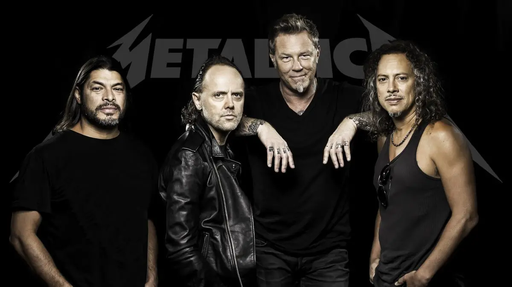
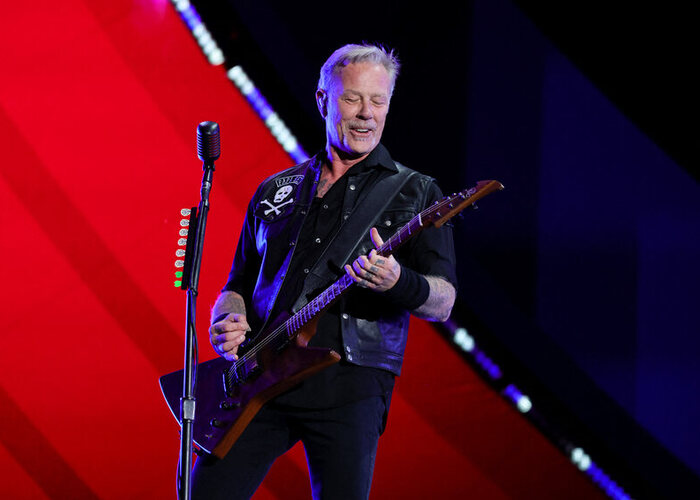
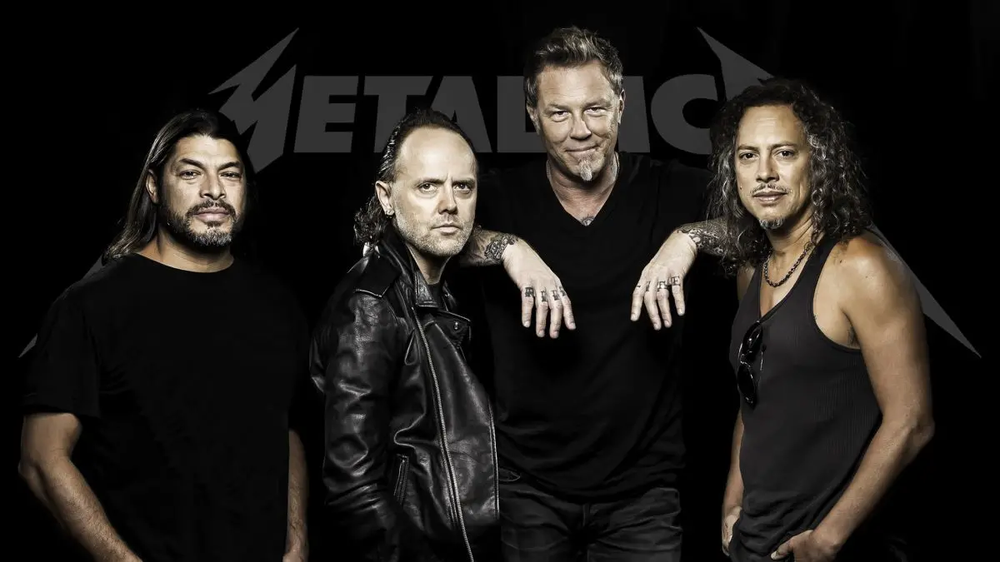
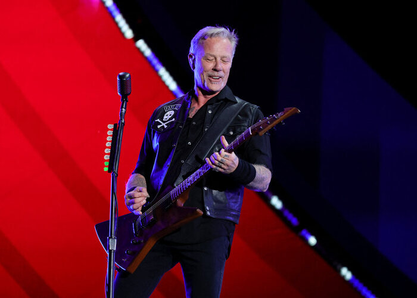

AC/DC est un groupe de hard rock australien, formé à Sydney en 1973. Pionnier du hard rock, il a marqué l'histoire avec des albums légendaires comme "Back in Black".
Albums 



Metallica, formé en 1981, est l'un des groupes de metal les plus influents. Leur album "Master of Puppets" est considéré comme un chef-d'œuvre du thrash metal.
Babymetal est un groupe japonais unique qui fusionne le metal avec la J-pop. Formé en 2010, ils ont révolutionné le genre avec leur style kawaii metal.
Linkin Park, formé en 1996, a révolutionné le nu metal en fusionnant rock, rap et électronique. Leur album "Hybrid Theory" est l'un des plus vendus du 21e siècle.
Indochine, groupe phare du rock français depuis 1981, mélange new wave et rock alternatif. Leur style unique et leurs textes poétiques ont marqué plusieurs générations.
Albums
Led Zeppelin, formé en 1968, est l'un des pionniers du hard rock. Leur mélange de blues, rock et mysticisme a créé des classiques comme "Stairway to Heaven".


Gojira, groupe de metal français formé en 1996, est reconnu pour ses compositions techniques et ses paroles engagées sur l'environnement. Un des groupes de metal français les plus influents.
Albums
Iron Maiden, pilier du heavy metal depuis 1975, est connu pour ses compositions épiques, ses pochettes emblématiques et sa mascotte Eddie. Un des groupes les plus influents du metal.
AlbumsPowerwolf, formé en 2003, est connu pour son power metal théâtral mêlant thèmes religieux et histoires de loups-garous. Leur style unique combine puissance musicale et mise en scène gothique.
AlbumsScorpions, groupe allemand formé en 1965, est l'un des pionniers du hard rock et du heavy metal. Connu pour leurs ballades puissantes comme "Still Loving You" et leurs hymnes rock comme "Rock You Like a Hurricane".
Albums